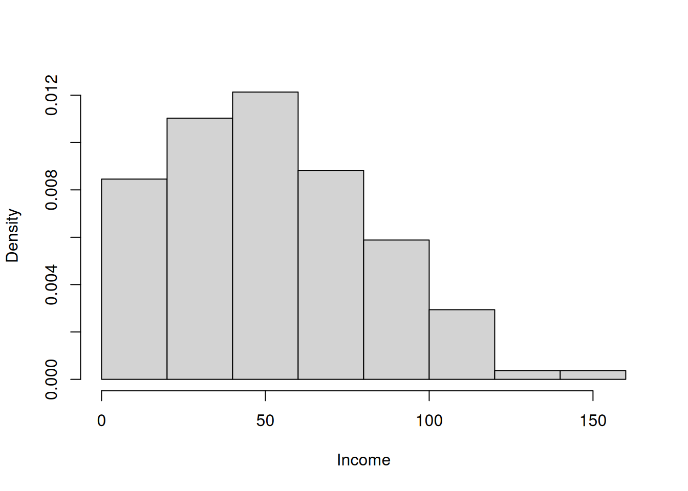

c(inc76$income)[1:6][1] 66.49 14.40 43.54 36.50 18.34 117.23c(inc76$income)[1:6][1] 66.49 14.40 43.54 36.50 18.34 117.23Typical aim: Characterizing the income distribution (density function) \(f\) given a random sample \[ \{X_1,\dots,X_n\} \] with \[ X_i\overset{\text{i.i.d.}}{\sim} f \]
Traditional statistical key figures such as
Problem: Such key figures only summarize single aspects of a distribution.
Estimating the total density function \(f\) can provide more detailed, more wholistic information.

Disadvantages of the histogram:
Example: Too small or too large bin widths
Figure 1 shows a comparison of the histogram versus the density estimate from a kernel density estimatior.

Consider a histogram with \(J\) (e.g., \(J=8\) as in Figure 1) bins all having the same bin-width \(2h,\) defined by equidistant intervals \[ (x_{j-1},x_j] \] with \[ x_j-x_{j-1}=2h\quad \text{for all} \quad j=1,\dots,J. \] The bin-height is determined locally at the \(j\)th interval mid-point \[ \bar{x}_j=(x_{j-1}+x_j)/2 \] by the relative frequency of data points \(X_1,\dots,X_n\) that fall within the \(j\)th interval \((x_{j-1},x_j],\)
\[ \begin{align*} \hat f_{hist}(\bar{x}_j) & =\frac{\hbox{Number of } X_{i}\hbox{ in } (x_{j-1},x_j]}{2hn} \end{align*} \tag{1}\] Note: The scaling by \(2hn\) is necessary to guarantee that the area of each bin equals the relative frquency of data points \(X_1,\dots,X_n\) that fall into the interval \((x_{j-1},x_j],\) \[ \begin{align*} \text{Area of $j$th Bin} & = (\text{bin-width}) \cdot (\text{bin-height of $j$th bin})\\[2ex] & = \qquad 2h\quad\, \cdot \frac{\hbox{Number of } X_{i}\hbox{ in } (x_{j-1},x_j]}{2hn}\\[2ex] & = \frac{\hbox{Number of } X_{i}\hbox{ in } (x_{j-1},x_j]}{n}\\[2ex] & = \frac{1}{n}\sum_{i=1}^n \; 1_{(X_i\in(x_{j-1},x_j])}, \end{align*} \] where \(1_{(\cdot)}\) denotes the indicator function, i.e., \(1_{(\text{TRUE})}=1\) and \(1_{(\text{FALSE})}=0.\) This guarantees that the bin areas of the histogram sum up to one \[ \begin{align*} \sum_{j=1}^J\text{Area of $j$th Bin} &=\sum_{j=1}^J \frac{1}{n}\sum_{i=1}^n \; 1_{(X_i\in(x_{j-1},x_j])}\\[2ex] &=\frac{1}{n} \sum_{j=1}^J \sum_{i=1}^n \; 1_{(X_i\in(x_{j-1},x_j])}=\frac{n}{n}=1. \end{align*} \]
Doing some smart rearrangements of Equation 1, allows writing the histogram as a type of kernel density estimator:
\[
\begin{align*}
\hat f_{hist}(\bar{x}_j)
& =\frac{\hbox{Number of } X_{i}\hbox{ in } (x_{j-1},x_j]}{2hn}\\[2ex]
&=\frac{1}{nh}\sum_{i=1}^n\frac{1}{2}1_{\left(x-h < X_i\leq x+h\right)}\\[2ex]
&=\frac{1}{nh}\sum_{i=1}^n\frac{1}{2}1_{\left(-1<\left(\frac{X_i-x}{h}\right)\leq 1\right)}\\[2ex]
& =\frac{1}{nh}\sum_{i=1}^n K\left(\frac{X_{i}-\bar{x}_j}{h}\right),
\end{align*}
\] where \(K(z)\) denotes the symmetric \((K(z)=K(-z))\) kernel function \[
K(z)=\left\{
\begin{array}{ll}
1/2 & \hbox{ if } z\in (-1,1] \\
0 & \hbox{ else}.
\end{array}\right.
\]
A kernel density estimator generalizes the histogram \(\hat f_{hist}(\bar{x}_j)\) by estimating the unknown density \(f\) not only at the mid-points \(\bar{x}_j,\) but at every \(x,\) which yields the moving histogram \[ \begin{align*} {\hat{f}}_{nh}(x)=\frac{1}{nh}\sum_{i=1}^nK\left( \frac{x-X_{i}}{h}\right) \end{align*} \tag{2}\] where
Let \[ \{X_1, \ldots, X_n\} \] denote a random sample with \[ X_i\overset{\text{i.i.d.}}{\sim} f\quad\text{for}\quad i=1,\dots,n. \]
Aim: Find a density estimator \[ \hat{f} \] for the true, unknown density \(f\) without making a parametric assumption on \(f\) such as assuming that \(f\) is the density of a normal distribution with unknown mean and unknown variance.
The only assumption on \(f\) is the following qualitative smoothness assumption: The density function \(f(x)\) is assumed to be sufficiently smooth—i.e., to be sufficiently often differentiable for all \(x.\)
Starting point: We use the connection between density functions \(f\) and distribution functions \(F(x) = P(X \leq x);\) namely,
\[
\begin{equation*}
f(x) = \frac{d}{dx} F(x) = F'(x), \qquad x \in \mathbb{R}.
\end{equation*}
\]
Idea: Approximate the derivative of the distribution function using the difference quotient. For small \(h > 0,\) we have that \[ \begin{align*} f(x) = F'(x) &\approx \frac{F(x+h) - F(x)}{h}%\\[2ex] % F'(x) &= \frac{F(x+h) - F(x)}{h} + O(h) \end{align*} \tag{3}\] or \[ \begin{align*} f(x) = F'(x) &\approx \frac{F(x) - F(x-h)}{h}.%\\[2ex] %F'(x) &= \frac{F(x) - F(x-h)}{h} + O(h), \end{align*} \tag{4}\]
In both the right-hand (Equation 3) and the left-hand difference quotient (Equation 4) have an approximation error of the order \(O(h)\) for \(h\to 0\) with \(h>0.\)
In his seminal work on the kernel density estimator, @Rosenblatt_1956 uses an even better derivative approximation based on the symmetric difference quotient \[ \begin{equation*} f(x) = F'(x) = \frac{F(x+h) - F(x-h)}{2h} + O(h^2), \end{equation*} \tag{5}\] where the approximation error is of the order \(O(h^2)\) for \(h\to 0\) with \(h>0.\) This means that the approximation error goes, in absolute values, to zero as fast as \(h^2\to 0\) or faster; i.e. \[ \begin{align*} & O\big(h^2\big)=\\[2ex] =&\left\{\text{Any function}\;g(h)\text{ such that }\frac{|g(h)|}{h^2}\to c\;\text{ as }\;h\to 0\text{, where }0\leq c<\infty\right\}. \end{align*} \]
Let \(F\) be three times continuously differentiable; i.e. \(F^{(3)}(x)\) is a continuous function for all \(x.\) \[ \begin{align*} &\frac{F(x+h) - F(x-h)}{2h}=\\[2ex] &[\text{Taylor polynomial approximations for $F(x+h)$ and $F(x-h)$ around $x\colon$}]\\[2ex] =&\frac{\left(F(x)+F^{(1)}(x)h + \frac{1}{2}\,F^{(2)}(x) h^2 +\frac{1}{6}\,F^{(3)}(x)h^3 + o(h^3)\right)}{2h}-\\[2ex] &\frac{\left(F(x)-F^{(1)}(x)h+ \frac{1}{2}\,F^{(2)}(x) h^2-\frac{1}{6}\,F^{(3)}(x)h^3+o(h^3)\right)}{2h}\\[2ex] &[\text{Applying straight forward simplifications:}]\\[2ex] =&\frac{2\,F^{(1)}(x)h+\frac{2}{6}\,F^{(3)}(x)h^3+o(h^3)}{2h}\\[2ex] =&\frac{2\,F^{(1)}(x)h}{2h}+\frac{\frac{1}{3}\,F^{(3)}(x)h^3}{2h}+\frac{o(h^3)}{2h}\\[2ex] &[\text{Using that $h^{-1}o(h^3)=o(h^2)\colon$}]\\[2ex] =&F'(x) +\frac{1}{6}\,F^{(3)}(x)h^2 +\frac{1}{2}\,o(h^2)\\[2ex] &[\text{Using that $\texttt{constant}\times h^2=O(h^2)$ and that $\texttt{constant}\times o(h^2)=o(h^2)\colon$}]\\[2ex] =&F'(x)+O(h^2) + o(h^2)\\[2ex] &[\text{Using that $o(h^2)=O(h^2)$ and that $2O(h^2)=O(h^2)\colon$}]\\[2ex] =&F'(x)+O(h^2) \end{align*} \]
Using the definition of the distribution function \(F(x)=P(X\leq x)\) we get \[ \begin{align*} f(x) & = \frac{F(x+h) - F(x-h)}{2h} + O(h^2) \\[2ex] & = \frac{P(X \leq x+h) - P(X \leq x-h)}{2h} + O(h^2)\\[2ex] & =\frac{1}{2h} P(x-h < X \leq x+h) + O(h^2)\\[2ex] \Rightarrow\quad f(x) & \approx \frac{1}{2h} P(x-h < X \leq x+h) , \end{align*} \] where the approximation is very good for smallish \(h>0.\)
Estimating the unknown probability \(P(x-h < X \leq x+h)\) by its empirical counterpart (relative frequency) yields the moving histogram estimator as in Equation 2: \[ \begin{align*} \hat{f}_{nh}(x) &=\frac{1}{2h}\hat{P}\left(x-h < X \leq x+h\right)\\[2ex] &=\frac{1}{2h}\frac{\text{Number of $X_i$ in $(x-h, x+h]$}}{n}\\[2ex] &=\frac{1}{nh}\sum_{i=1}^n\frac{1}{2}1_{\left(x-h < X_i\leq x+h\right)}\\[2ex] &=\frac{1}{nh}\sum_{i=1}^n\frac{1}{2}1_{\left(-1<\left(\frac{X_i-x}{h}\right)\leq 1\right)}\\[2ex] &=\frac{1}{nh}\sum_{i=1}^nK\left(\frac{x-X_{i}}{h}\right) \end{align*} \] where \(K(z)\) denotes the symmetric \((K(z)=K(-z))\) kernel function \[ K(z)=\left\{ \begin{array}{ll} 1/2 & \hbox{ if } z\in (-1,1] \\ 0 & \hbox{ else}. \end{array}\right. \]
my_movhist <- function(x, data, h){
n <- length(data)
dat_x <- data[data > x-h & data <= x+h]
result <- length(dat_x)/(n*2*h)
return(result)
}
my_movhist <- Vectorize(my_movhist, "x")data <- inc76$income
h <- 12 # bandwidth
xx <- seq(from=(min(data)), to=(max(data)), len=750)
yy <- my_movhist(x = xx, data = data, h = h)
plot(x = xx, y = yy,
ylab="Density", xlab="Income",
main = "Density Estimation using the Moving Histogram", type="l")
Density estimates of the moving histrogram estimator are discontinuous—even though, we aim to estimate a smooth (e.g. three times continuously differentiable) denstiy function \(f.\)
Kernel Density Estimator:
Replacing the discontinuous rectengular kernel function of the naive moving histogram estimator by a symmetric, continuous, differentiable function, such as